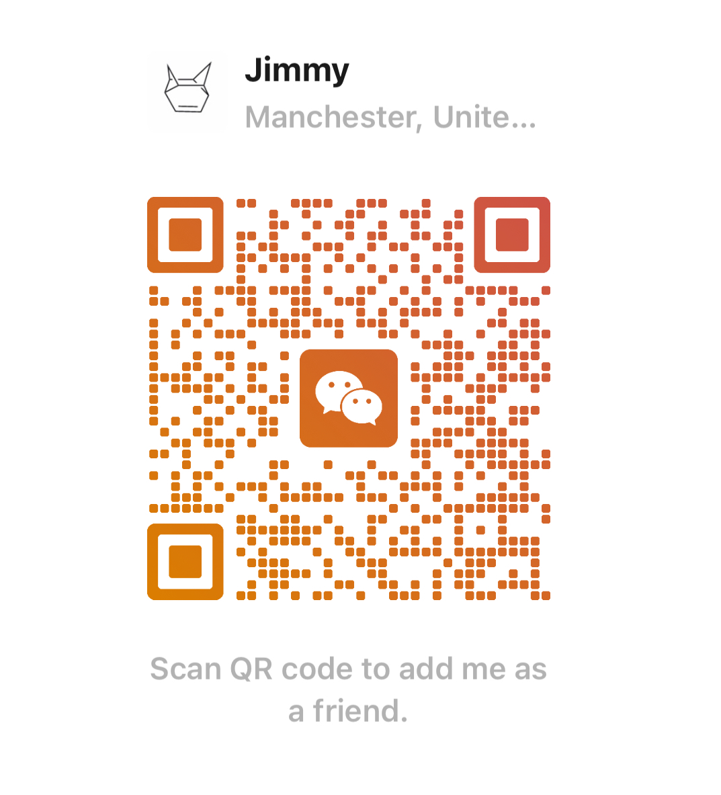

Tsinghua University Comprehensive Scholarship
Awarded the Tsinghua University Comprehensive Scholarship (清华大学综合奖学金).
lijiemingjimmy.github.io
I am Jieming Li, an undergraduate student in Computer Science and Technology at Tsinghua University. I currently conduct research with Prof. Ning Ding in the Department of Electronic Engineering (OpenRUA team), focusing on Embodied Agents and Physical Intelligence.
My research explores how embodied agents can learn from experience, anticipate the consequences of their actions, and recover intelligently from failure. I am particularly interested in connecting generative world modeling with reliable robot decision-making.
EducationB.Eng. in Computer Science, Tsinghua University
Research groupOpenRUA · Prof. Ning Ding
Current focusEmbodied Agents · Physical Intelligence
Also buildingAI systems for writing and education
Updates
Awarded the Tsinghua University Comprehensive Scholarship (清华大学综合奖学金).
I joined the Department of Computer Science and Technology at Tsinghua University.
Curriculum vitae
B.Eng. in Computer Science and Technology
Beijing, China
Undergraduate Researcher · Prof. Ning Ding’s group · OpenRUA team
Researching world models and vision-language-action models for embodied agents, with particular interest in learning from interaction, failure-aware adaptation, and reliable robot decision-making.
Co-author. Evaluating heuristic learning in a long-running game agent competition.
Second author. Studying how VLA policies use multimodal failure context to improve subsequent attempts; accepted at the CVPR 2026 3D-LLM/VLA Workshop and submitted to EMNLP 2026.
An educational AI project for the Language Teaching Center at Tsinghua University, combining stateful diagnosis, course-grounded feedback, revision tracking, and anti-ghostwriting safeguards.
清华大学综合奖学金
5th Place · 香港现场赛第五名
Third Prize · Team lead · 具身智能挑战赛三等奖
Second Prize · 电子系智能体竞赛二等奖
新生奖学金
ResearchWorld models, VLA, robot learning, multimodal generation
EngineeringPython, Rust, TypeScript, React, FastAPI, research prototyping
Beyond the labBadminton, ultimate frisbee, distance running
WeChat: li-jm25 · Feel free to contact me！

Fun facts
The best ultimate player on the badminton team, the best runner on the ultimate team, and the best badminton player on the distance-running team.
羽毛球队里飞盘玩得最好的，飞盘队里长跑最好的，长跑队里羽毛球打得最好的。
Selected work
Research papers and systems, presented through the questions they ask and the things they make possible.
Writing archive
Projects, paper reading, technical notes, and reflections on embodied intelligence.
Reading & thinking